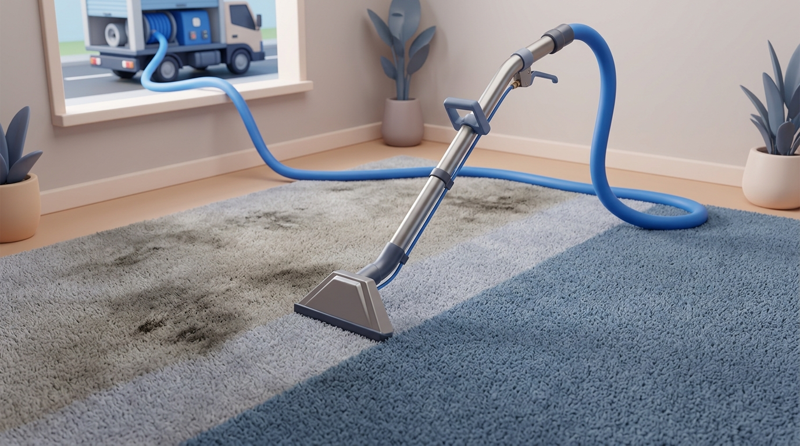

{{ s.eyebrow }}
{{ s.h1 }}
{{ s.lead }}
35+ years experience
Eco-friendly products
24-hour guarantee

Sound familiar?
{{ s.concernsTitle }}
{{ c.t }}
{{ c.x }}
Our service
{{ s.serviceTitle }}
{{ s.serviceIntro }}
✓
{{ inc }}
What to expect
{{ e.n }}
{{ e.t }}
{{ e.x }}
24h
Our 24-hour guarantee. If you're not satisfied with any area we cleaned, tell us within 24 hours and we'll return to make it right. No charge, no argument.
Our process
How every job works, start to finish.
{{ p.n }}
{{ p.t }}
{{ p.x }}
Related services
{{ s.ctaTitle }}
Free quotes by phone, email, or the contact form. Serving the whole Lower Mainland.